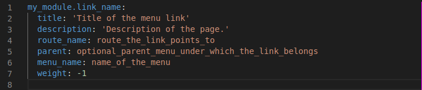
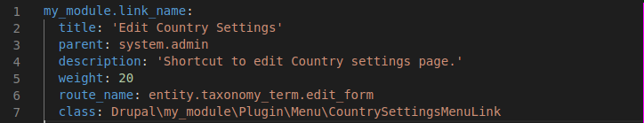
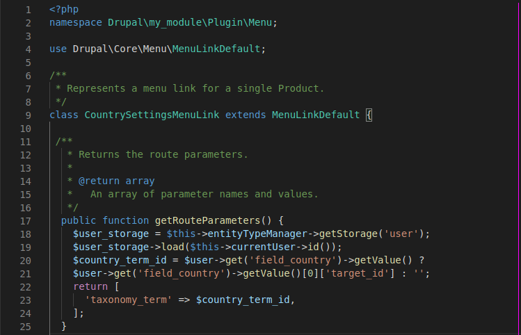

Drupal 8's menu system offers greater flexibility compared to Drupal 7. Functionality is now divided into distinct systems, allowing for a more modular and efficient approach to menu management.
Drupal 8's menu system leverages two specialized components to handle menu functionality:
Menu links in Drupal 8 are defined within module files following the convention `module_name.links.menu.yml`. Since menu links are plugins themselves, they are discovered using YAML.

title: Edit Country
route_name: entity.taxonomy_term.edit_form
parent: main # Replace with your actual parent menu
Here, the `title` key specifies the displayed text, and `route_name` defines the route the link points to. Specifying the `parent` link within an existing menu and clearing the cache adds the link.
Imagine a scenario where country admins can edit details. Countries are implemented as a vocabulary with terms. We want to create a dynamic menu link for each admin leading to their country's edit page.
(Note: This section assumes some familiarity with Drupal concepts)
To make the link dynamic, we extend the `MenuLinkDefault` class and provide the term ID dynamically using the `getRouteParameters()` function. This function passes the term ID to the path, making it dynamic based on the logged-in user.
In our example, we only want the link visible if a country value exists. The `isEnabled()` function can be overridden to check this condition. If not met, `FALSE` is returned, disabling the link for the user.
This is just one approach to dynamic menu links. Other methods include hooks for static links and link parameter modification.